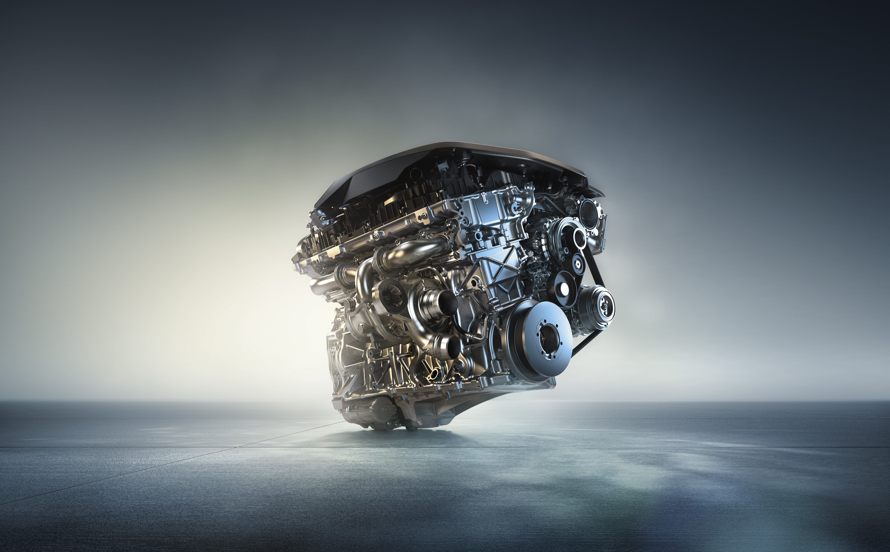
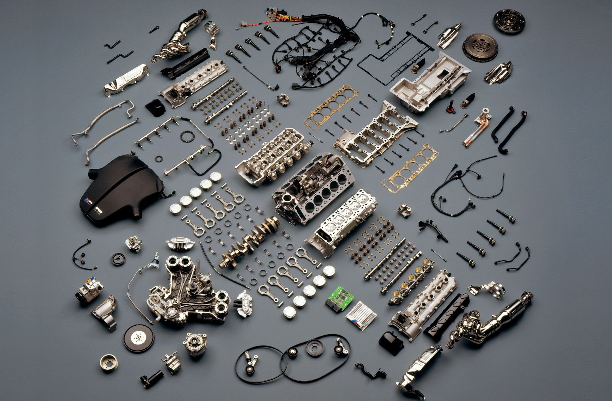
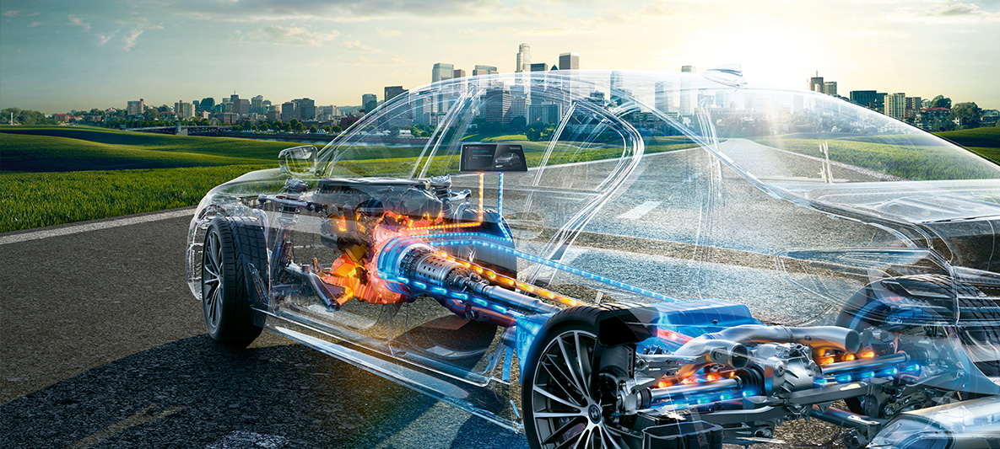
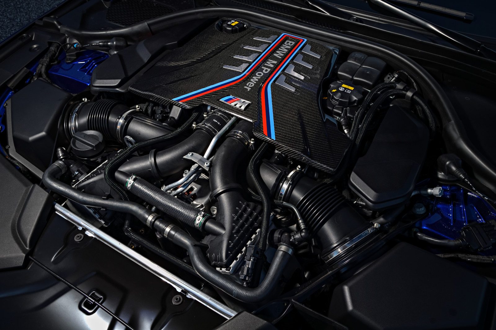

Motori u BMW vozilima
BMW je poznat po velikom izboru motora. Razlike između motora najviše se odnose na vrstu goriva, snagu, potrošnju, način rada i namjenu vozila u svakodnevnoj uporabi.

Benzinski motori
Benzinski motori često su mirniji u radu i mogu pružiti ugodan osjećaj vožnje. Često su dobar izbor korisnicima kojima je važna tišina, ujednačen rad motora i ugodniji karakter vozila.
Dizelski motori
Dizelski motori često su pogodni za duže relacije i veću kilometražu jer mogu nuditi dobru iskoristivost goriva i više snage pri nižim okretajima.
Jači motori
Jači motori pružaju bolje ubrzanje i veće performanse, ali obično imaju i veće troškove kupnje, goriva i održavanja. Zato je važno uskladiti izbor s potrebama korisnika.
Odabir prema potrebama
Najbolji motor nije isti za svakoga. Pravi izbor ovisi o načinu vožnje, godišnjoj kilometraži, vrsti cesta i financijskim mogućnostima korisnika.

Što je važno pri odabiru motora?
Potrošnja goriva
Neki motori troše manje, a neki više. To treba uskladiti s planiranom uporabom vozila i godišnjom kilometražom.
Trošak održavanja
Složeniji i snažniji motori često imaju i skuplje održavanje, pa pri odabiru nije važna samo snaga, nego i dugoročni troškovi.
Namjena vozila
Za gradsku vožnju prikladan je drugačiji motor nego za duga putovanja ili zahtjevniju vožnju. Zato se izbor motora treba promatrati praktično.

Zašto BMW motori imaju važnu ulogu u dojmu marke?
Utjecaj na vožnju
Motor izravno utječe na ubrzanje, osjećaj u vožnji, potrošnju i ukupni dojam koji vozilo ostavlja. Zbog toga je odabir motora jedno od najvažnijih pitanja kod kupnje.
Povezanost s namjenom vozila
BMW u različitim modelima koristi različite motore kako bi vozilo bilo prilagođeno svojoj svrsi. Na taj način korisnik može pronaći motor koji najbolje odgovara njegovoj svakodnevici.
